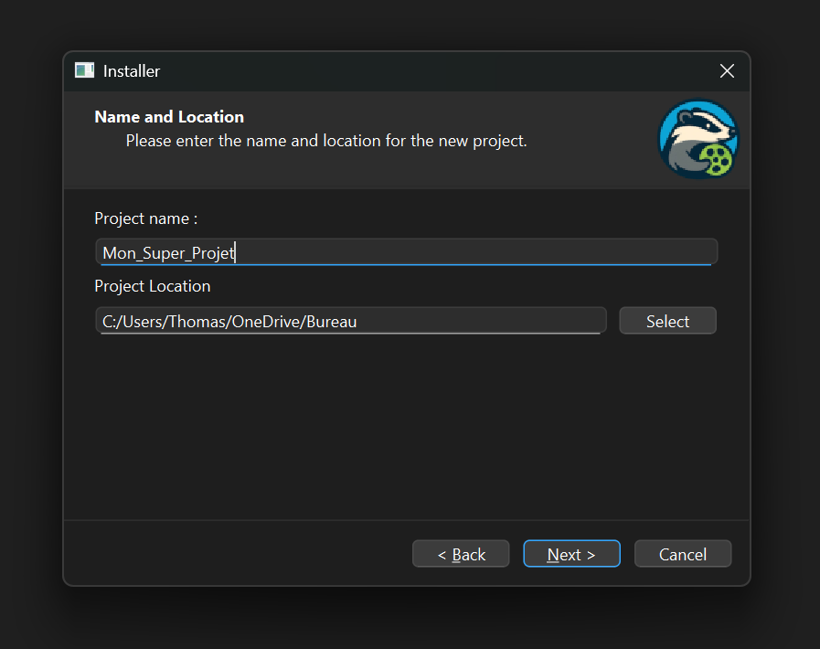
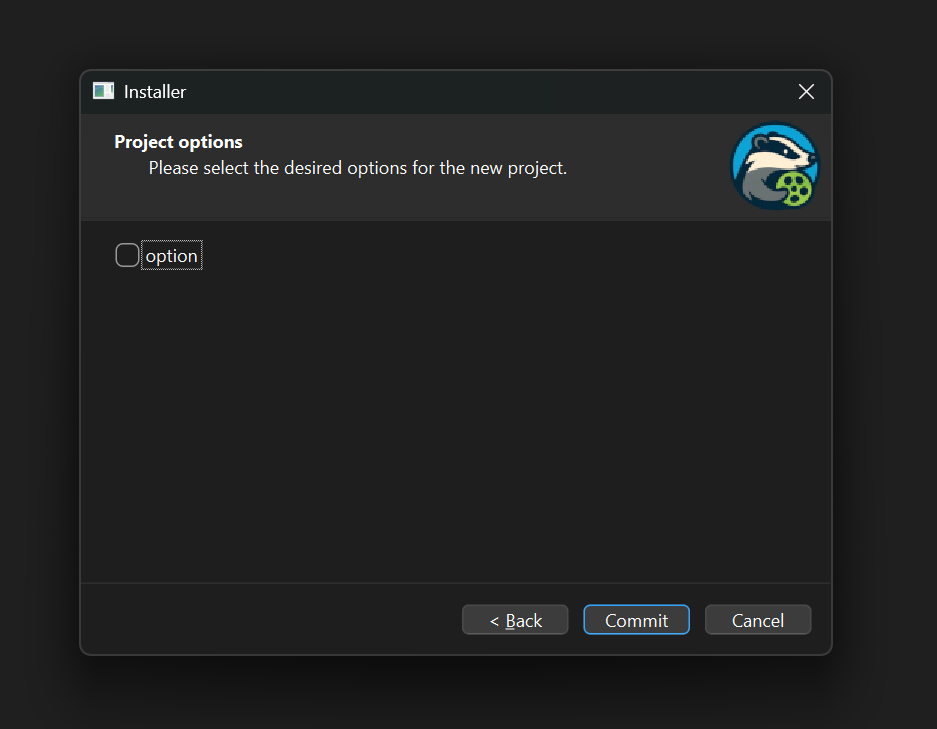
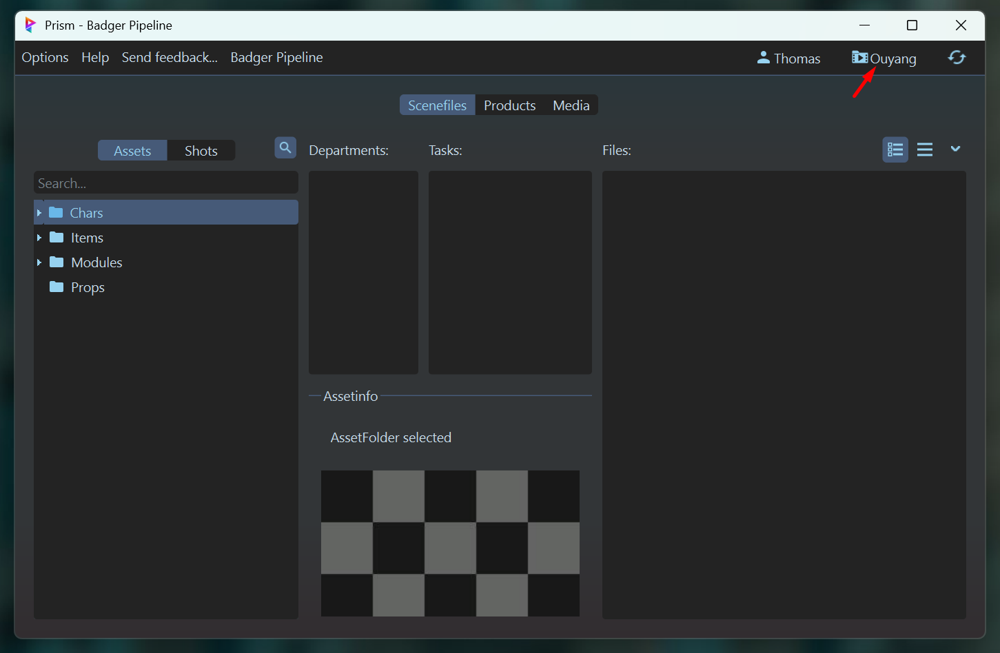
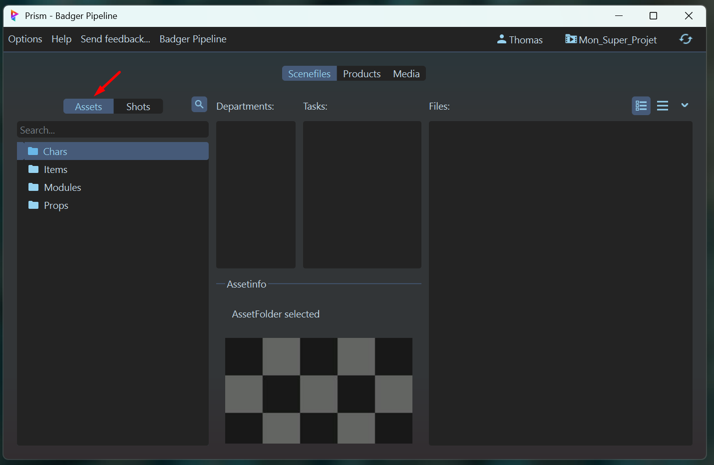
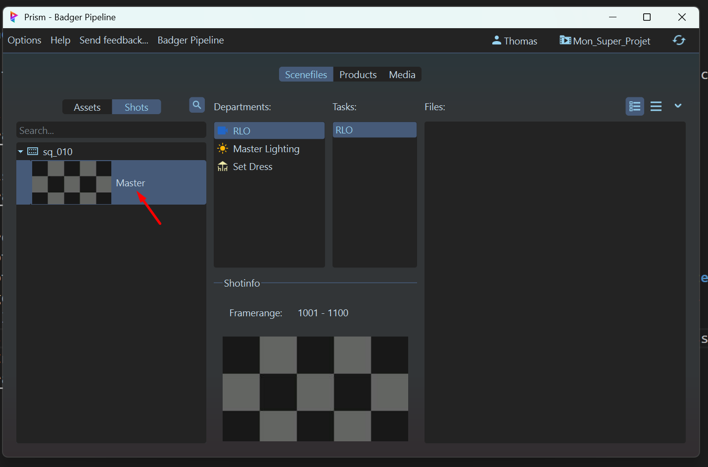
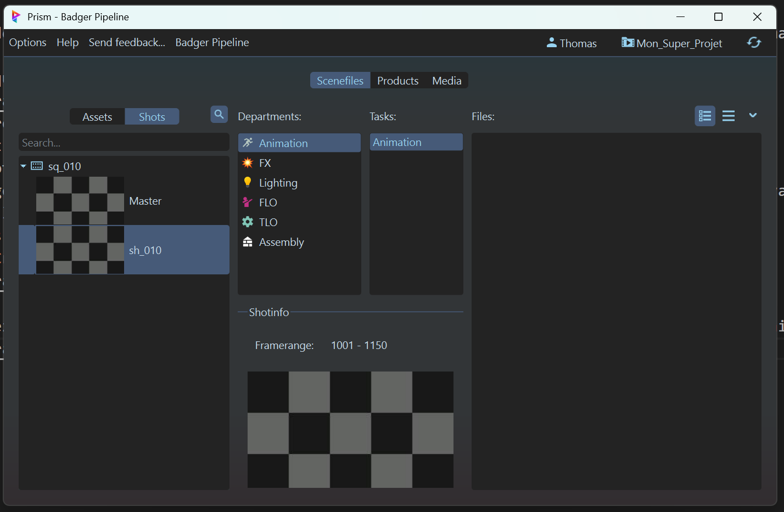

Démarrage⚓︎
La premiere étape pour démarrer avec le pipeline est d'installer prism sur votre session puis d'installer sur votre ordinateur, puis de créer un projet (ou d'utiliser un projet existant).
Puis vous pourrez créer des assets et des séquences.
Comment installer prism sur ma session ?⚓︎
- Lancez l'installeur. Il se trouve dans le dossier "
GANDALF/Install/Prism2.exe" ou le télécharger directement sur internet prism2 - Cliquez sur le bouton "
Start Setup" - Cliquez sur le bouton "
I agree" - Puis sur "
Install" puis "Finish" une fois l'installation terminée.
Une fois prism installé sur ta session il faut l'installer spécifiquement sur les logiciels que tu vas utiliser.
-
En ouvrant prism pour la première fois cliquez sur "
Browse Plugins"

Ou bien si un projet a déjà été créer, vous pouvez ouvrir le Hub en allant dans "Option" puis "Hub"
-
Vous pouvez ainsi télécharger prism précisément pour chaque logiciel
-
En cliquant sur "
Installer" vous allez devoir vous connecter à Prism avec le login suivant : "esma.2k25@gmail.com". Le mot de passe se trouve dans le discord de la promo pin dans la partie usd.

-
Une fois téléchargé, ouvrez une fois le logiciel puis fermez le pour que les préférences soient mises à jour.
{kind=link}
Comment installer le pipeline sur mon ordinateur ?⚓︎
J'ai mis a disposition un installateur pour Windows.
Comment lancer l'installeur⚓︎
Pour lancer l'installeur, il vous faut suivre les étapes suivantes :
- Ouvrez ce repository github du projet sur votre navigateur : lien du repo github
-
Sélectionner la dernière version, puis dans la partie "
Asset" cliquez sur le fichier zip pour le télécharger. -
Extrayez le contenu du fichier ZIP dans un dossier de votre choix sur votre ordinateur
- Ouvrez le dossier extrait, puis ouvrez le dossier
installer, puis le dossierbin - Double-cliquez sur le fichier
installer.exepour lancer l'installeur. Vous arriverez sur une fenêtre comme celle-ci :
Attention
L'installeur dépends des autres fichiers dans le repository, il faut donc que vous ayez extrait tout le contenu du ZIP avant de lancer l'installeur.
Il n'est pas possible de lancer l'installeur directement depuis le ZIP.
Il n'est donc pas possible de partager que le .exe.
Utilisation de l'installeur⚓︎
L'installeur est très simple d'utilisation, il vous suffit de suivre les étapes suivantes :
-
Sur la première page, vous avez deux choix :
Choisissez l'option que vous souhaitez en cliquant sur le bouton correspondant.
Installer les outils⚓︎
Avec cette option, l'installeur va installer tous les outils nécessaires pour travailler sur vos projets. L'installateur ne vas pas chercher les fichiers sur internet. Il vas juste copier les fichiers déjà présents dans le repository la ou il faut.
Voici les étapes à suivre :
- Cliquez sur le bouton "
Installer les outils" de la première page.
Comment créer un projet ?⚓︎
- Lancez l'installeur. Il se trouve dans le dossier
installer/bin/installer.exedu repository. - Cliquez sur le bouton "
Create a new project" de la première page.

- Choisissez un nom pour votre projet, ainsi qu'un emplacement sur votre ordinateur. Puis cliquez sur le bouton "
Next".
 - Choisissez les options de votre projet. Pour l'instant, il n'y en a pas. Peut-être dans le futur. Cliquez sur le bouton "
Commit".
 -
Attendez que l'installeur termine la cr√©ation de votre projet. Le code est telement optimis√© que le temps de chargement ne devrait m√™me pas √™tre visible üòé.
A la fin de l'installation, vous devriez voir a la fin du texte "
SUCCESS" en vert.Cliquez sur le bouton "
Next"

-
Le projet est actuellement créé. Vous pouvez cliquer sur le bouton "
Open the project in explorer" pour ouvrir le dossier de votre projet dans l'explorateur de fichiers.Cliquez ensuite sur le bouton "
Finish" pour fermer l'installeur.

{kind=link}
{kind=link}
Comment utiliser un projet déja existant avec Prism?⚓︎
- Lancez Prism.
-
Cliquez sur le bouton en haut a droite :
 -
Cliquez sur "
Browse" et choisissez le dossier de votre projet.

-
Le projet est chargé. Vous pouvez maintenant naviguer dans les assets et les séquences de votre projet.
{kind=link}
Comment créer un asset ?⚓︎
- Dans Prism, rendez-vous dans l'onglet "
Assets".
 - Selectionnez un des dossiers déja présents, (ou créez en de nouveaux a l'intérieur d'un dossier existant) puis clic droit et cliquez sur "
Create Asset...".

-
Une boite de dialogue s'ouvre :
- Choisissez un nom pour votre asset.
- Activez les presets pour l'asset. Cela définiras quel départements seront créés pour cet asset.
- Choisissez un des presets disponibles, en fonction du type d'asset que vous créez.
- Vous pouvez donner une description a votre asset, qui sera visible dans prism.
- Cliquez sur le bouton "
Create".

-
L'asset est créé. Vous pouvez maintenant le sélectionner dans la liste des assets pour voir ses détails, ou faire un clic droit dessus pour ouvrir son dossier dans l'explorateur de fichiers.
{kind=link}
{kind=link}
Sur la page principale, vous pouvez voir plusieurs sections :
- La liste des assets, avec l'asset que l'on viens de créer.
- La liste des départements. Ces départements ont été créés automatiquement en fonction du preset que l'on a choisi.
- La liste des taches pour le département sélectionné. Une task est une sous catégorie de travail dans un département. Par exemple, dans le département "Modeling", on peut avoir les tâches "Sculpt", "UVs", etc.
- Les scènes existantes pour l'asset sélectionné. Par défaut, aucune scène n'est créée automatiquement. s
Comment créer une séquence ?⚓︎
La création d'une séquence est très similaire à la création d'un asset, a quelques détails près puisqu'il nous faut créer des shots, ansi qu'un Master shot.
-
Dans Prism, rendez-vous dans l'onglet "
Shots".

-
Faites clic droit dans la liste des séquences, puis cliquez sur "
Create Shot...".

-
Une boite de dialogue s'ouvre :
- Choisissez un nom pour votre séquence.
- Choisissez un nom pour votre shot. Dans un premier temps, nous allons créer le Master shot. Appelez le "Master" (nomenclature importante ici).
- Selectionnez le framerange de votre shot. Si c'est un Master, cette valeur n'a pas d'importance, mais pour les autres shots, ce sera important.
- Activez les presets pour la séquence. Cela définiras quel départements seront créés pour cette séquence.
- Choisissez un des presets disponibles, en fonction du type de séquence que vous créez. Pour le Master, choisissez le preset "Master".
- Cliquez sur le bouton "
Create".

-
La séquence est créée. Vous pouvez maintenant la sélectionner dans la liste des séquences pour voir ses détails, ou faire un clic droit dessus pour ouvrir son dossier dans l'explorateur de fichiers.

{kind=link}
Maintenant, vous pouvez créer des shots pour cette séquence. La procédure est la même que pour créer une séquence, mais avec quelques différences :
- Faites clic droit sur la séquence dans la liste des séquences, puis cliquez sur "
Create Shot...".

-
Une boite de dialogue s'ouvre :
- Le nom de la séquence est déjà rempli.
- Choisissez un nom pour votre shot. Par exemple : "sh_010".
- Selectionnez le framerange de votre shot. Cette valeur est importante, car elle définira le framerange de travail pour ce shot.
- Activez les presets pour le shot. Cela définiras quel départements seront créés pour ce shot.
- Choisissez un des presets disponibles, en fonction du type de séquence que vous créez. Pour un shot classique, choisissez le preset "Shot".
- Cliquez sur le bouton "
Create".

-
Le shot est créé. Vous pouvez maintenant le sélectionner dans la liste des séquences pour voir ses détails, ou faire un clic droit dessus pour ouvrir son dossier dans l'explorateur de fichiers.

{kind=link}
Et maintenant ?⚓︎
Maintenant que vous avez créé un projet, des assets et des séquences, vous pouvez commencer à travailler dessus.
Je vous conseille de lire les documentations concernant les différents départements, pour savoir comment travailler sur chacun d'entre eux. - Voir la documentation des départements